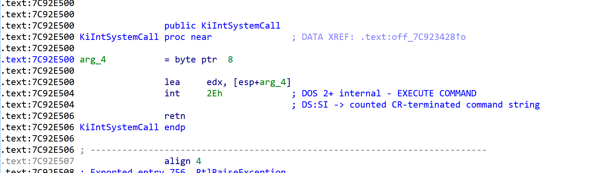

API从3到0的学习
主要是记录下逆向过程
api从三环到零环的调用
API
x86
为了方便先以x86为例子来演示
函数为VirtualAllocEx
可以看到调用了NtAllocateVirtualMemory来自ntdll.dll
这边可以看到调用了7FFE0300h处所指向的的函数
这就涉及到一个结构体_KUSER_SHARED_DATA
User 层地址为：0x7ffe0000
Kernnel 层地址为：0xffdf0000
他们分别映射在同一个物理页，但是只有0环才有写权限 //pte属性rw位
windbg查看结构体，可见0x300偏移处是 +0x300 SystemCall，查看一波地址
这边是sysenter快速调用，所需要替换的寄存器都放在msr寄存器中，当然除了ss，ss是通过cs+8计算得
当然如果cpu不支持的话也有中断门，esp0和ss0在tss任务段，但现在基本都使用快速调用了
可以在ntdll中看到

上面是中断门。
下面来分析一波进入0环后的操作
分析的内核文件是ntoskrnl，如果是29912分页就不是分析这个了，应该是ntkrnlpa，这边默认101012分页，文件在c盘system32下可找到
中断门0x2e在idt表中查找到对应处理函数//KiSystemService
如果是快速调用的话是KiFastCallEntry
1 | |
是在虚拟8086下使用
1 | |
这五个是中断发生时保存的
下面分析代码
这边保存寄存器，其实就是往ktrapframe里面赋值，可以发现0就是errorcode
当权限切换至0环，因为已经压栈5个参数，所以esp指向的正好是trapframe的errorcode处
push完后修改fs寄存器，在gdt表中可查看fs对应了kpcr
然后是吧异常链表压栈，我们都知道在三环fs所对应的是teb，在0环就是kpcr了，所以所使用的异常链表不一样，压栈链表后第一个操作就是清空mov dword ptr ds:0FFDFF000h, 0FFFFFFFFh
下面给esi赋值，esi指向了_KTHREAD
可以看见kpcr 0x124偏移处是+0x004 CurrentThread : Ptr32 _KTHREAD
接着吧cs取出最低位and 1赋值给esi+0x140
就是+0x140 PreviousMode : Char
很简单，因为cs低俩位表示所处权限模式
接着把esi+0x134的TrapFrame给ebx，再把ebx赋值到esp+0x3c处然后吧当前TrapFrame保存给esi+0x134
然后是ebp和eip给调试所需要保存位置mov [ebp+0Ch], edx保存参数
最后一部分操作如上，esi+0x2c
查看一波就是检测调试状态
如果处在调试状态就跳转

可以看到就是在赋值调试所需要的寄存器
如果不在调试就直接跳转
//这边可以扩展假如你起个线程往里面不停写值，调试的时候就无法下硬件断点了，因为相关调试寄存器都没赋值。
可以看到改地址所处函数为KiFastCallEntry，即是快速调用处
这边就是当cpu支持快速调用时，所做的保存现场操作了
稍微逆向一下，其实可以明显发现大部分与中断相同，就是中断前操作系统已经帮你push五个寄存器，而快速调用需要自己来
下面来看一波系统服务表，因为api进0环时之前说过是通过eax来找到所调用函数的，那怎么找就涉及到系统服务表了
先来看看系统服务表，里面有俩张，分别是俩个内核模块得导出函数，系统服务表里面并没有所有内核函数，而是有所有提供给三环的内核函数，下面win32k得是和图形相关的内核函数

在windbg重通过查找ssdt来找到系统服务表
系统服务表位于kthread+0xe0处
至于如何判断使用哪个表得看eax，eax低12位位索引，第13位决定了用哪张表，参数个数则以字节为单位，占多少字节个数就是多少，比如俩个int那么个数就是8。
下面开始逆向
eax>>8
and 0x30
如果第13位为0，那么所得答案就是0，否则为0x10，而这正好是系统服务表第一级大小
add edi, [esi+0E0h]就正好可以决定使用哪张表，然后and eax 0xfff，取了低12位索引。
判断是否越界
然后是针对第二张表的一些操作这边忽略直接跳转
mov cl, [eax+ebx]此时ebx指向了参数个数edi指向了所用系统服务表开始
mov ebx, [edi+eax*4]吧所需要调用函数地址给ebx
下面参数拷贝一次性拷贝4字节，从esi开始这边指向了参数，拷贝到edi就是esp位置，拷贝ecx>>2个4字节
然后call ebx，三环到0环api如何调用就基本逆完
x64
环境win10 x64
这边以VirtualAlloc为例
1 | |
程序反编译如下
可以看到跳转到了kernel32
紧接着kernel32跳转kernelbase.dll
在kernelbase.dll中查询相关函数
可以发现调用了ntdll的函数
和x86很像，查看_KUSER_SHARED_DATA偏移308处
系统调用，可以判断这边是在验证cpu是否支持快速调用，如不支持则跳转int 0x2e中断门
下面康康快速调用入口(64)看ntoskrnl.exe
gs和fs一样，所以在零环这边gs就是kpcr
切换堆栈后开始往trapframe里push保存现场环境
可以看到gs:10h处是用户空间esp

替换rsp为rsp0，开始保存环境
trapframe如上

保存现场工作完成后开始更具系统调用号来找系统服务表
x64和x86还是不一样，这边取表做了些运算
运算完成后调用对应内核函数
关于WOW64的话这边有个学习链接
https://www.slideshare.net/YardenShafir/jumping-into-heavens-gate
简而言之是把32位转换成64位，后面还是走的64位ntdll的syscall
如上图所示，转换为64位
因为ida是32位不能反编译，这边用64位打开查看eip偏移9处
直接是跳转，后面就是把栈中的参数按照64位调用方式传递给寄存器然后就是和64位一样的路线了